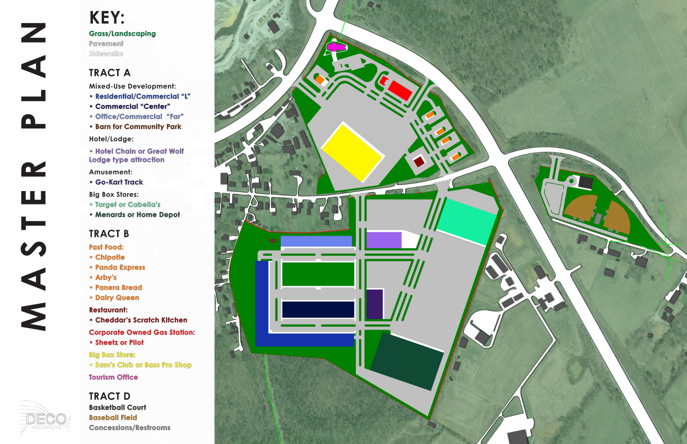

Projects
The Villas at Woodson Bend

| Location: |
Bronston, Kentucky |
| Client: |
Villas Ventures |
| Project Type(s): |
Master Planning, Single-family residential, Multi-family residential |
| Area (number of levels): |
160 acres (5 house options, 8 floor plan options) |
| Project Year (status): |
2022 (under construction) |
| Note: |
Master planning with spec house design for a lakefront residential development marketed toward retiree |
Located within the Woodson Bend community on Lake Cumberland, The Villas consists of 3 single-family house designs (with 4 total plan options), duplexes, and condominium options. The community markets to active retirees, so aging-in-place and considerations for varied family structures and abilities played an important role in the design of each home. With the natural beauty of the area, consideration for recreational vehicles, boats, and other hobbies were considered, with one home option including room for a Class A motor home in the garage. A planned community, lot constraints and deed restrictions also provided design parameters to consider. As design lead, I oversaw master planning and house design from initial concept through documentation and detailing for each home as well as led meetings with the project team and client.
Cumberland Commons

| Location: |
Somerset, Kentucky |
| Client: |
Matt Ford, Developer |
| Project Type(s): |
Master Planning |
| Area (number of levels): |
124 acres (3 tracts) |
| Project Year (status): |
2022 (fundraising) |
| Note: |
Mixed-use development with commercial, residential, and sport complexes |
Located 3 miles from City Hall at the major intersection of KY-80 and KY-914 which serves as the gateway to Lake Cumberland for all visitors from the north and east of Somerset, KY, this 124-acre development seeks to provide a bridge between tourists/visitors and the residents of Somerset, KY. Tract A (34 acres) features boat access to a large fueling station, tourism office, restaurants, and a large retail store to capitalize on lake traffic. Tract B (80 acres) provides a live/work option with mixed-use buildings to attract smaller retailers, restaurants, and offices, apartments, a large park, box retailers, a hotel, indoor amusement park and restaurants. Tract C (10 acres) provides a multi-sport complex across KY-914 from Tracts A and B, further drawing visitors while providing easy access to the other businesses in the development. As project lead, I was intimately involved in every detail of creating the master plan, researching draw information, and projecting potential businesses, and was responsible for coordination with the civil engineer involved in the project. I also oversaw the rendering process, presentation development, and collaboration with the client to provide an end deliverable to chase potential investors and tenants.
The Virginia Theater

| Location: |
Somerset, Kentucky |
| Client: |
City of Somerset |
| Project Type(s): |
Performing Arts Venue |
| Area (number of levels): |
11,244 sqft (2 levels + basement) |
| Project Year (status): |
2022 (project complete) |
| Note: |
Historic theater revitalized on its 100th anniversary |
Constructed in 1922 as the first movie theater in Somerset, KY, the Virginia Cinema was a 1-screen theater until the roof collapsed in 1993. The building remained exposed to the elements for nearly 20 years and vacant for an additional 6 years until the local government purchased the property and Deco Architects was hired to design a cost-effective revitalization and pivot to a performing arts venue with a focus on hosting live theater and concerts. As project manager, I led the design, documentation, detailing, and bid processes and oversaw the contract administration of the project, from initial concept through final completion. The masonry structure required significant bracing and the demands of modern venues required creative programming solutions to accommodate the flexibility desired by the client and ensure a safe and comfortable venue for all patrons and performers. Opened in June 2022, this historic building is serving a new generation of patrons, many of whom were not alive when its doors were first shuttered.